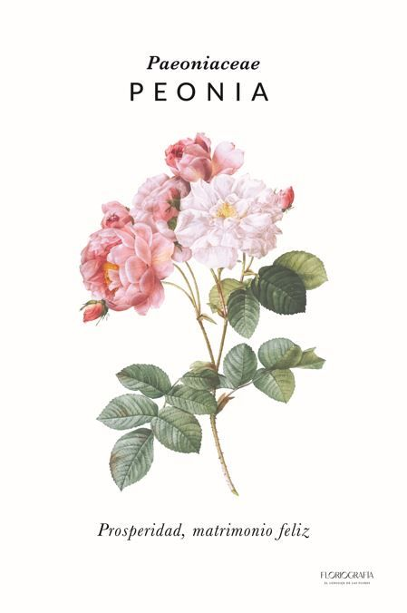
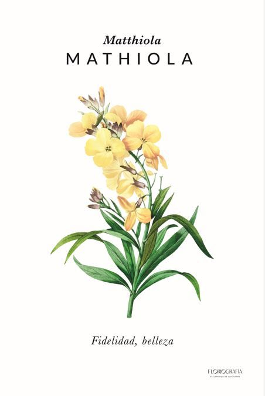

Al rededor del mundo existe una diversa variedad de flores, de las cuales en esta pagina te enseñare alguna de ellas y un poco de informacion sobre ellas.
Paeonia debe su nombre a Paeón, el médico de los dioses. Aparece mencionado en la Ilíada y en la Odisea de Homero. Paeón era también discípulo de Asclepio y cuando se puso celoso de su alumno, Zeus salvó a Paeón de su ira convirtiéndolo en la flor de la peonía. Es curioso como los griegos tienen historias para todas nuestras flores.

MATHIOLA
Matthiola es un género de plantas herbáceas, anuales o bianuales. Se caracterizan por la pilosidad de tallos y hojas. Florecen en invierno o primavera, produciendo flores de colores variados y muy fragantes, usadas con frecuencia en ornamentación. Comprende 138 especies descritas y de estas, solo 22 aceptadas.

GIRASOL
El girasol, es una de las plantas con flor más populares actualmente. Esta hermosa planta es originaria de América, específicamente del centro y el norte del continente, siendo México el principal productor. Además es una de las flores favoritas para la ornamentación de jardines y arreglos florales, ya que los girasoles también son unas de las más cultivadas para el sector de la alimentación.

{kind=link}